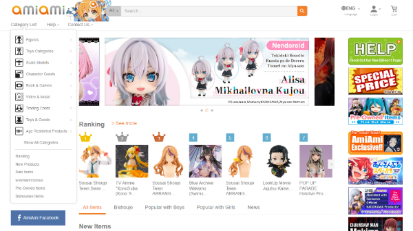
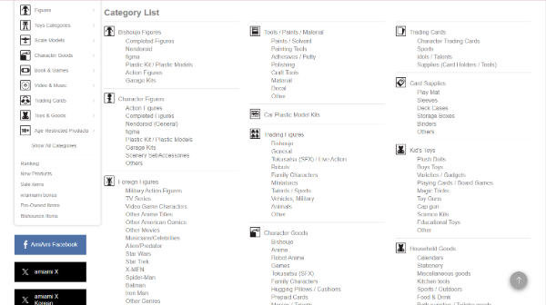
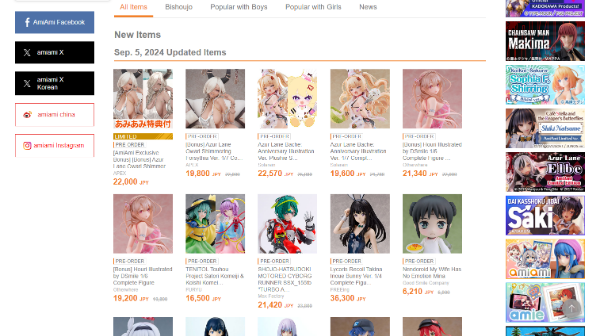

AmiAmiAmiAmi is an online retailer site that sells anime merchandise, character figures, and hobby products. They cater to collectors and fans of Japanese pop culture worldwide. They offer a large variety of items such as model kits, figures, and toys.
When evaluating the content and readability of AmiAmi's website, one positive aspect is the use of legible fonts and clear typographic hierarchy. The font size is easy to read, and different text levels (such as headings, subheadings, and body text) are distinct, which helps users navigate content more easily. These elements contribute to a good user experience, ensuring that users can quickly scan and understand the text on the page.
However, there are areas where the design negatively affects content readability. For expample, the non-collapsible navigation tab that appears under the category list takes up too much space and interferes with the homepage's flow. By taking up screen space, this tab limits content visibility that could otherwise be featured more prominently, such as new arrivals or best-selling items. A collapsible feature would be a better solution to declutter the interface and provide users a better browsing experience. The ability to collapse and expand menus would also make the site feel less overwhelming.
In addition, the website feels cluttered due to the presence of ads, images, and links scattered throughout the page. The colorful ads on the side of the homepage, draw attention away from product showcases like the 'Best Sellers' or 'Latest Releases.' These ads could be better positioned within content sections or beneath the primary product carousel, where they would still be visible but less disruptive.
Social media links located at the top left of the page also contribute to the cluttered apperance. A better placement would be at the bottom of the page, which is a common practice on most websites. This shift would allow users to focus more on the main content of the page without the distraction of links to external platforms.

Navigation: CThe current navigation system is complex. All product categories are grouped under a single 'category list,' which makes it hard to find specific items. This can feel overwhelming for users and lead to frustration. A better approach would be to spread subcategories across the main navigation bar, making it easier for users to find what they are looking for.
There is also confusion caused by overlapping category names like 'Toy Categories,' 'Character Goods,' and 'Toys & Goods.' These names are too similar and can cause confusion. To improve the navigation, the categories should be clearly labeled and more distinct from each other.
Another issue with the navigation is the absence of a 'Series' category. Users might be searching for items from a specific anime or franchise, and having a 'Series' filter would allow them to find products more easily. This would improve the overall organization of the site and make it more user-friendly.
Although the navigation system has flaws, the search bar at the top of the page is a helpful feature. It allows users to quickly find specific items, to streamline the search process and avoid digging for products through the multiple navigation tabs.

Design: BThe design of the AmiAmi website could be improved in terms of organization and layout. Having bright, colorful ads on the side of the homepage distracts users from the main content, such as the 'Best Sellers' and 'Latest Releases.'
The design would benefit from more whitespace, which would help focus attention on the primary content and improve readability.
Futhermore, some tabs, like 'Popular with boys' and 'Popular with girls,' feel unnecessary and clutter the homepage. Removing these tabs would simplify the layout and make navigation easier. Additionally, moving the social media links from the left side to the bottom of the page would create a cleaner design and reduce distractions.
From a usability perspective, the lack of an accessibility mode negatively impacts the experience for users with disabilities. Adding features like high contrast text or screen reader compatibility would make the site more inclusive.
Lastly, for SEO purposes, adding a value proposition or tagline above the scroll line would improve visibility and communicate the site's purpose more clearly to visitors.
In summary, while AmiAmi offers a wide range of products for anime and pop culture fans, its website has several areas that need improvement. The design feels cluttered, and the navigation system is not user-friendly. Adding more whitespace, improving the navigation, and introducing accessibility features would make the website easier to use and more enjoyable for visitors. With these changes, AmiAmi could provide a better online shopping experience for its users.